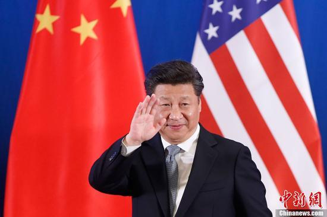

“海内存知己，天涯若比邻。”朋友多了路好走，共同的朋友多了情易洽、事易成。中美两国如果共同的朋友越来越多，那么，中美两国的共同利益必将越来越多，互相了解必将越来越深，矛盾必将越来越少，为两国和世界的贡献必将越来越大。所以，培育和巩固中美两国共同“朋友圈”意义重大。6月6日，习近平在第八轮中美战略与经济对话和第七轮中美人文交流高层磋商联合开幕式上指出：“中美在亚太地区拥有广泛共同利益，应该保持经常性对话，开展更多合作，应对各种挑战，努力培育两国共同而非排他的‘朋友圈’，都做地区繁荣稳定的建设者和守护者。”请随“学习中国”小编一起学习。
